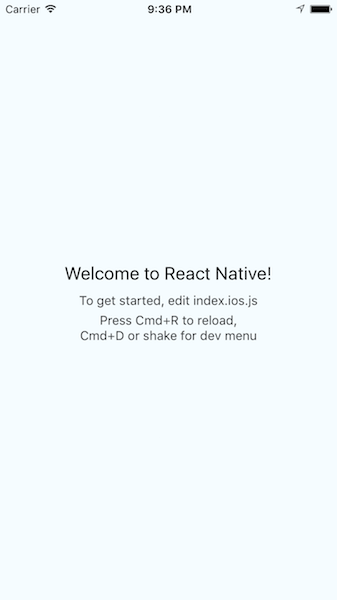
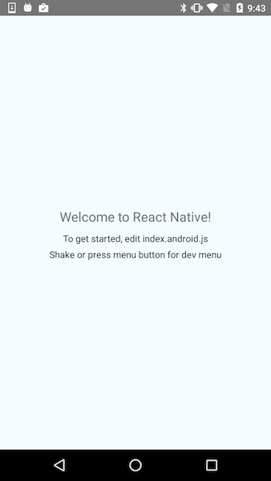

A Glimpse Into The Future With React Native For Web
One of the hardest decisions to make when starting a new app is which platforms to target. A mobile app gives you more control and better performance but isn’t as universal as the web. If you’re making a mobile app, can you afford to support both iOS and Android? What about trying to build a mobile app and a responsive web app? Ultimately, the best experience for your customers is for your app to work everywhere, but the development and maintenance costs of that can be prohibitive.
We have already seen how React Native can help you make iOS and Android apps with a shared code base, without sacrifices in quality. But what about the web? This is exactly the problem the React Native for Web project is trying to solve. Instead of forcing you to maintain two separate code bases for your mobile and web apps, or making a hybrid app, with all its compromises, React Native for Web is intended to let you write a single app that runs in a browser using standard web technologies, or on iOS and Android as a real native mobile app. While I don’t think the project is ready for production use yet, its potential success could mark a massive change in how large multi-platform applications are built. Let’s jump in!
How It Works Link
You might be thinking, “Wait! doesn’t React already work on the web?” You wouldn’t be wrong. Unfortunately, traditional React and React Native build on a different set of primitives. There are good historical reasons for this, since the building blocks of a web page and of a mobile app are quite different. Nonetheless, it would be great if we could use a single set of shared components.
React Native for Web’s solution is to provide browser-compatible implementations of React Native’s components — meaning, for example, that the of React Native has a DOM-based version that knows how to render. While not every React Native component is supported, enough of them are that you could (hopefully) share the majority of your code base.
In addition to the components themselves, styles for React and React Native are written differently. With React, most people use plain CSS or a preprocessor such as Sass. But in React Native, all styles are written in JavaScript, because there is no DOM and no selectors. With React Native for Web, styles are written just like they would be for React Native, rather than with CSS. This has the benefit of allowing you to write a single set of styles, which will work on both native mobile and the web.
We’ll take a deeper look later at how these ideas work in practice and at how much code is actually reusable. First, let’s get a sample app going.
Starting A New React Native Project Link
To get started, we will need to set up our project. At first, this will just be a regular React Native app, and then we’ll add React Native for Web. If you are following along, you’ll need to complete React Native’s “Getting Started” guide before heading into the next section.
Once you’ve got React Native installed, you can run the following command from your terminal:
react-native init ReactNativeWebThis will make a new React Native project named ReactNativeWeb. After it has finished installing, you can cd ReactNativeWeb, and then react-native run-ios or react-native run-android. If everything has gone correctly, you should see a friendly welcome message on your iOS or Android simulator or device.
Notice that React Native has created two JavaScript files in our project’s directory: index.android.js and index.ios.js. You can edit any of the styles or logic in these files and see those changes update in the running app. As you can probably guess, the .android.js file is for Android, and the .ios.js file is for iOS. Fortunately, separate files are only needed when you want multiple versions of a given file per platform. Most of the time, you’ll have a single file per component.
Managing Dependencies Link
Before we can get our app running in a web browser, we’ll need to get a bit of package installation out of the way. First, run the following to install both the react-native-web package and the official React web packages.
npm i react react-dom react-native-web --save(You might see some errors about peer dependencies from this command. You should be safe to ignore them, because they didn’t cause me any problems. If newer versions of any of these packages are out when you run the commands, though, you might need to adjust the installed versions.)
At this point, your package.json file should look something like this:
{
"name": "ReactNativeWeb",
"version": "0.0.1",
"private": true,
"scripts": {
"start": "node node_modules/react-native/local-cli/cli.js start"
},
"dependencies": {
"react": "15.1.0",
"react-dom": "15.1.0",
"react-native": "0.28.0",
"react-native-web": "0.0.25"
}
}While we have what seems to be everything required for our React Native app to run in a web browser, we must take a brief detour to consider the realities of web development. React Native’s packager compiles your ECMAScript 6 code to something that a phone’s JavaScript engine can understand, but it won’t help us in the browser. If we tried to run our app in a web browser right now, it would quickly fail due to syntax errors.
To solve this problem, we will use Babel and webpack. Babel will compile our ECMAScript 6 code into browser-compatible ECMAScript 5, and webpack will bundle the compiled JavaScript, as well as just generally make development faster. (There are other options for this. If you prefer another compiler or bundler, feel free to use it instead.)
Here are the installation commands to run:
npm i webpack babel-loader babel-preset-react babel-preset-es2015 --savenpm i webpack-dev-server --save-devHere, babel-loader and webpack-dev-server will be used to bundle and serve our JavaScript, while babel-preset-react and babel-preset-es2015 tell Babel which plugins we need to compile our code.
Here is what your package.json file should look like now: